▶ Video del recorrido
El recorrido principal de la fase, como lo haría un almacenero.
Cada negocio tiene un plan: piloto gratis o mensual de $30.000 con IVA incluido. Tres días antes del vencimiento se avisa; el dueño ve los datos para transferir, los copia con un botón y sube la captura o el PDF del comprobante (la IA lee monto, fecha y banco). José lo confirma con un clic desde su panel. Con más de 10 días de atraso, la app queda solo para mirar hasta que se confirme el pago; nunca se borra nada. Los datos de la cuenta son de ejemplo hasta que tengas la de la SpA.
El recorrido principal de la fase, como lo haría un almacenero.
Así lo ven los almacenes del piloto: no pagan nada hasta que tú cambies su plan. Se entra por Más → Mi plan y pagos.
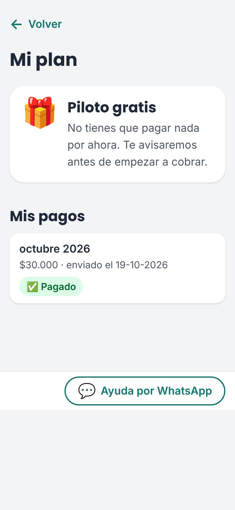
Tres días antes del vencimiento aparece esta tarjeta en el inicio (y un aviso en Avisos). Al tocarla, lleva a “Mi plan”.
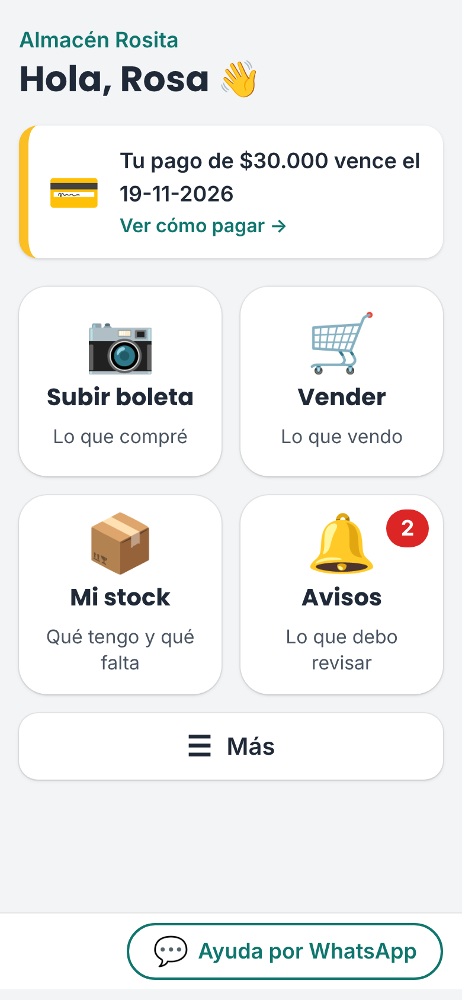
Paso 1: los datos de la cuenta, con un botón “Copiar datos” para pegarlos en la app del banco. Paso 2: “Ya pagué: subir comprobante”. (La cuenta es de ejemplo hasta que me des la de la SpA.)
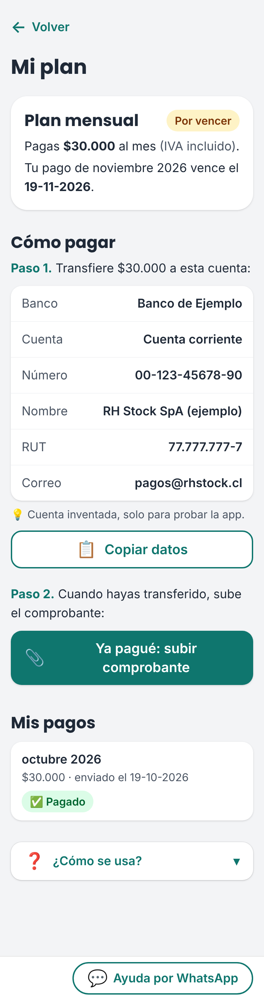
Se elige la captura de pantalla o el PDF del banco (o se le saca una foto). Se envía solo.
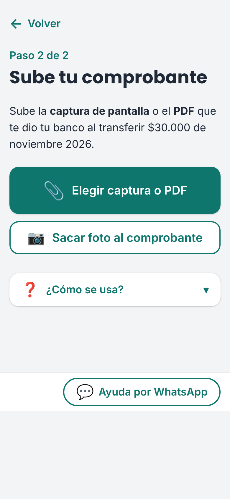
Mientras la IA lee el comprobante.
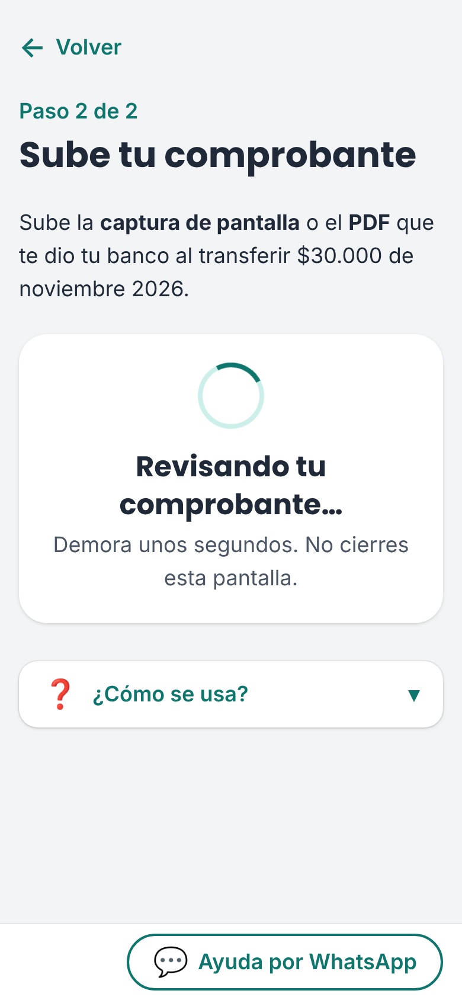
Si no se puede leer, pide otra foto con un mensaje simple. No se guarda nada.
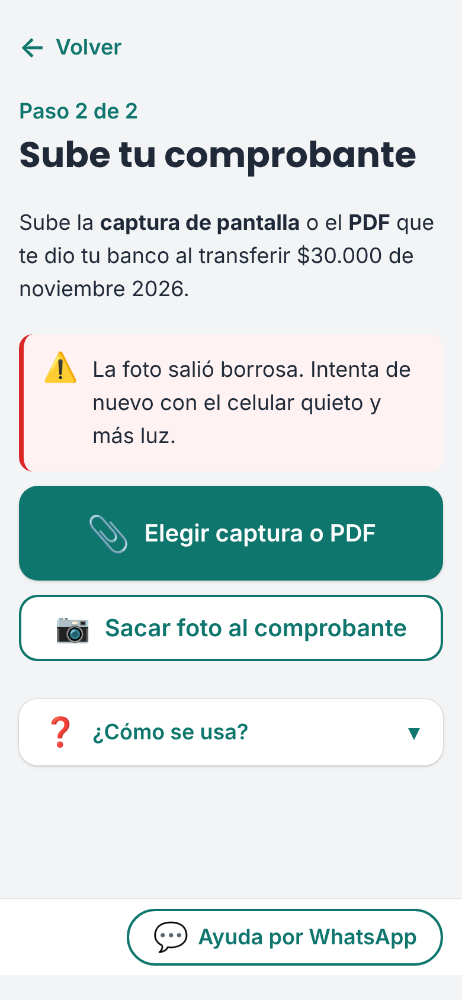
Confirma lo que leyó (monto, fecha y banco) y queda “En revisión” hasta que tú lo confirmes. Si el monto no coincide con el plan, se lo advierte.
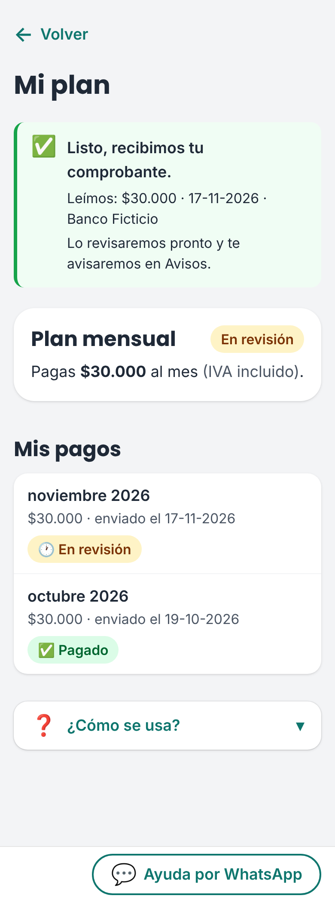
Pasado el vencimiento, una franja arriba avisa desde qué día la app quedará solo para mirar, con el botón “Pagar”.
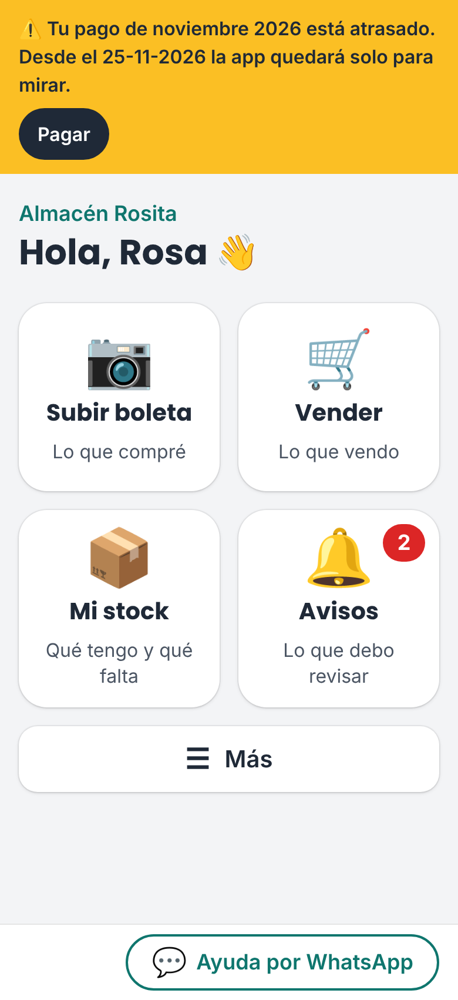
Franja roja arriba. Puede ver todo (stock, avisos, descargar a Excel), pero no registrar compras ni ventas hasta que confirmes el pago. Nunca se borra nada.
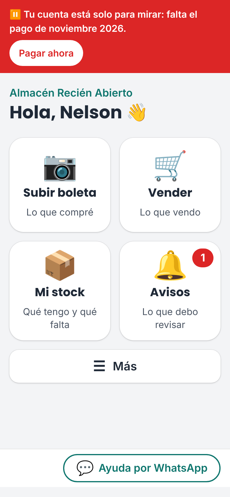
En Vender y Subir boleta explica por qué no se puede y qué hacer. Las ventas que hayan quedado guardadas en el celular se envían solas cuando confirmes el pago.
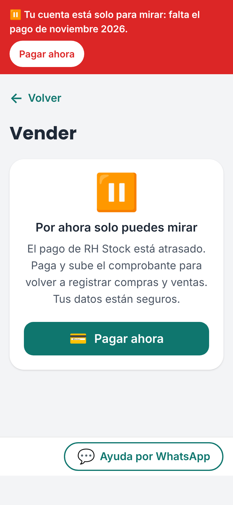
La tarea diaria deja en Avisos el recordatorio, el atraso y el paso a “solo para mirar” (más adelante también por correo y notificación). Los empleados no los ven.
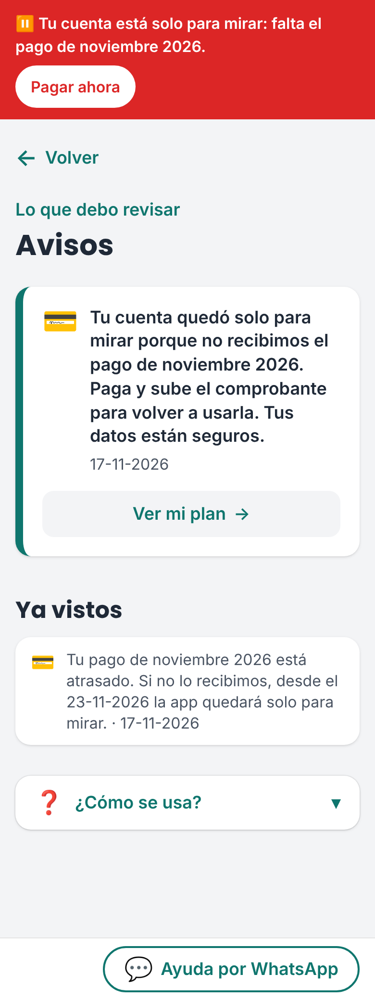
Arriba, cuánto recibiste este mes y cuántos están atrasados. Cada pago informado muestra el comprobante y lo que leyó la IA. Revisa en tu banco que llegó y aprieta “Confirmar pago”.
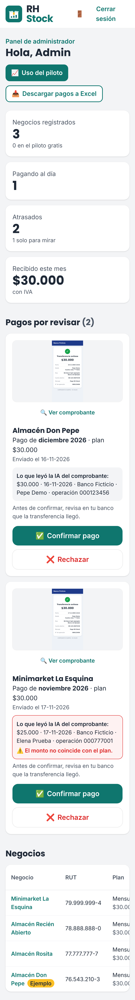
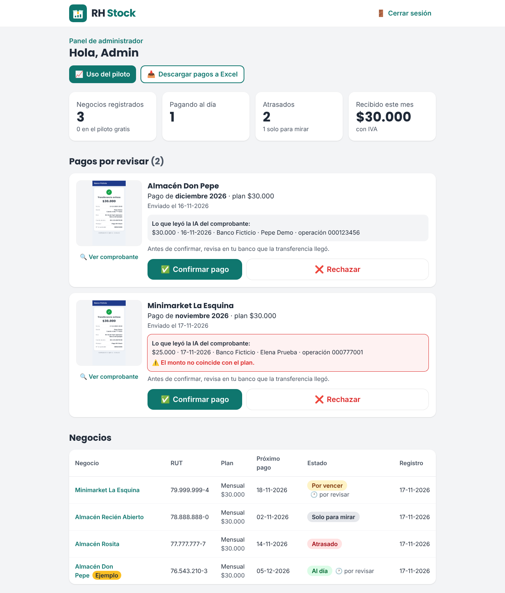
Si no llegó la transferencia o el monto no coincide, eliges el motivo con un toque. El dueño lo ve en Avisos y puede subirlo de nuevo.
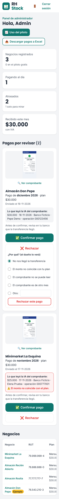
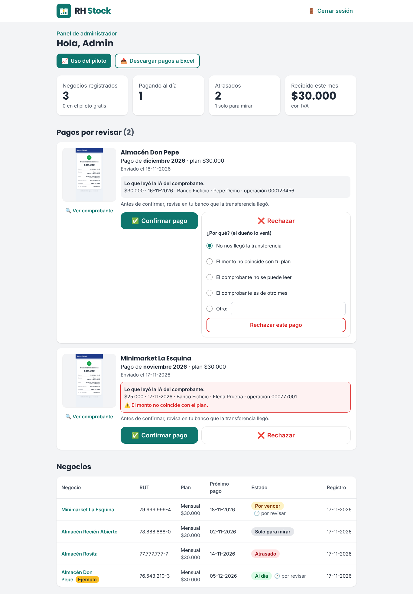
Con un clic el negocio queda al día, su próximo pago pasa al mes siguiente y le llega el aviso “Recibimos tu pago”.
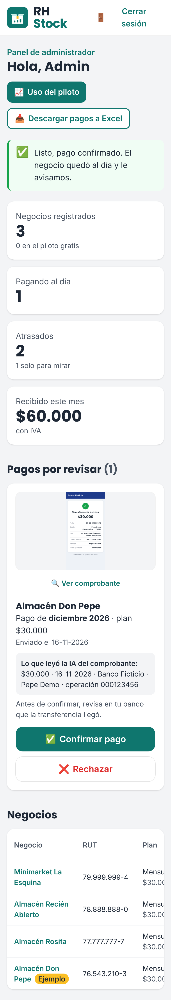
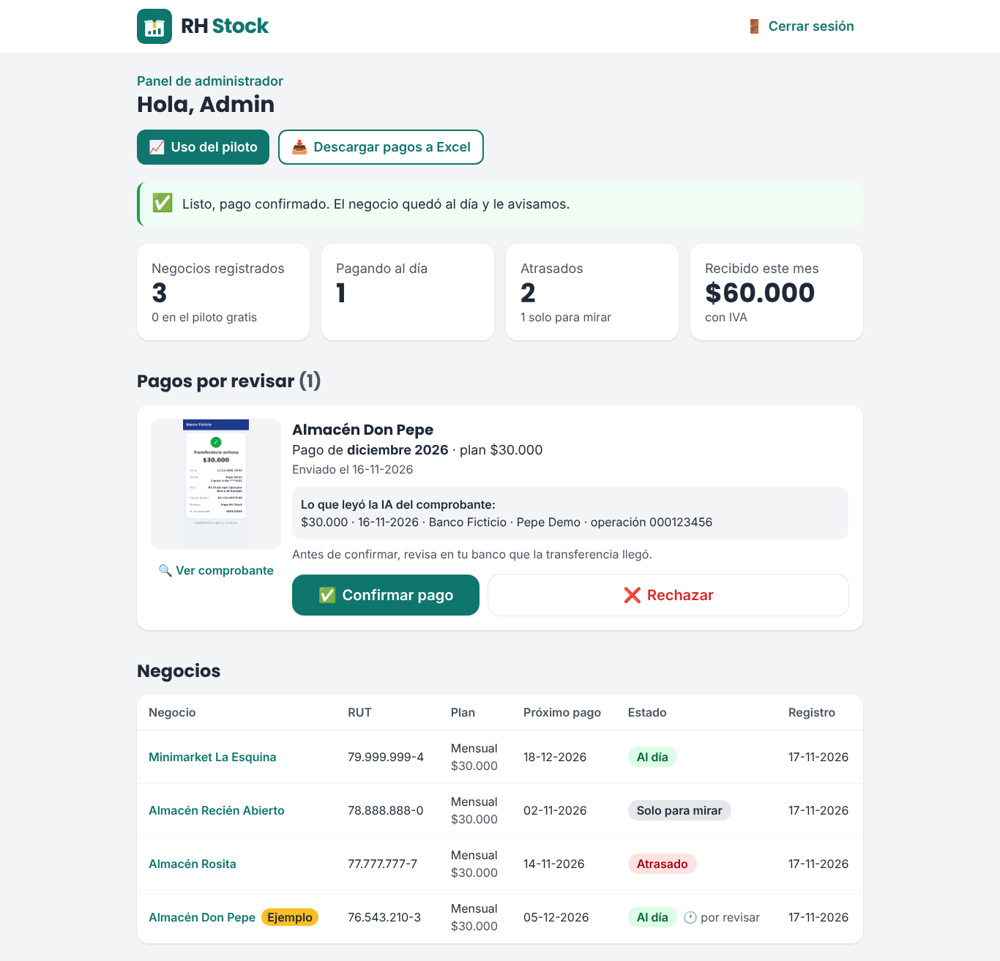
Al tocar un negocio en la lista: cambiar de piloto gratis a mensual (con su precio y el día del primer pago) e historial de pagos con sus comprobantes.
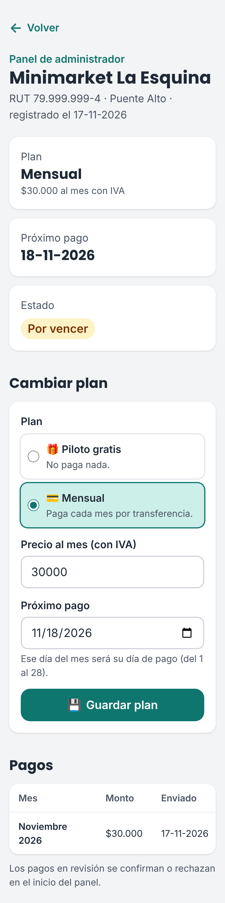
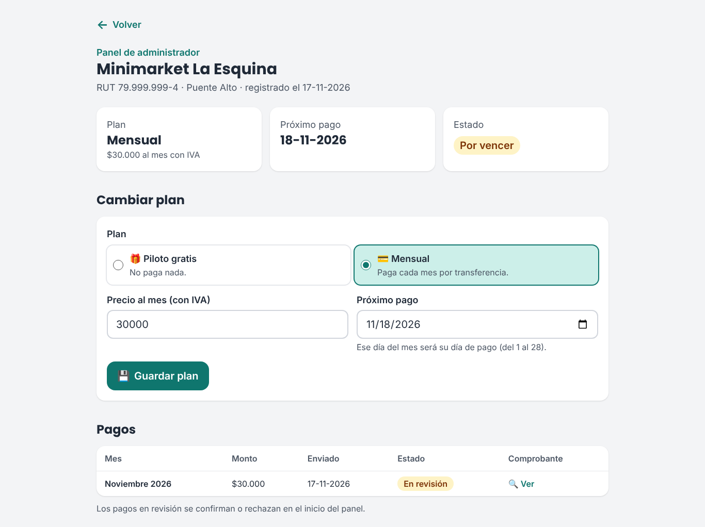
Los pagos confirmados con las mismas columnas de la hoja “Ingresos” de tu planilla de cuentas (neto e IVA ya separados).
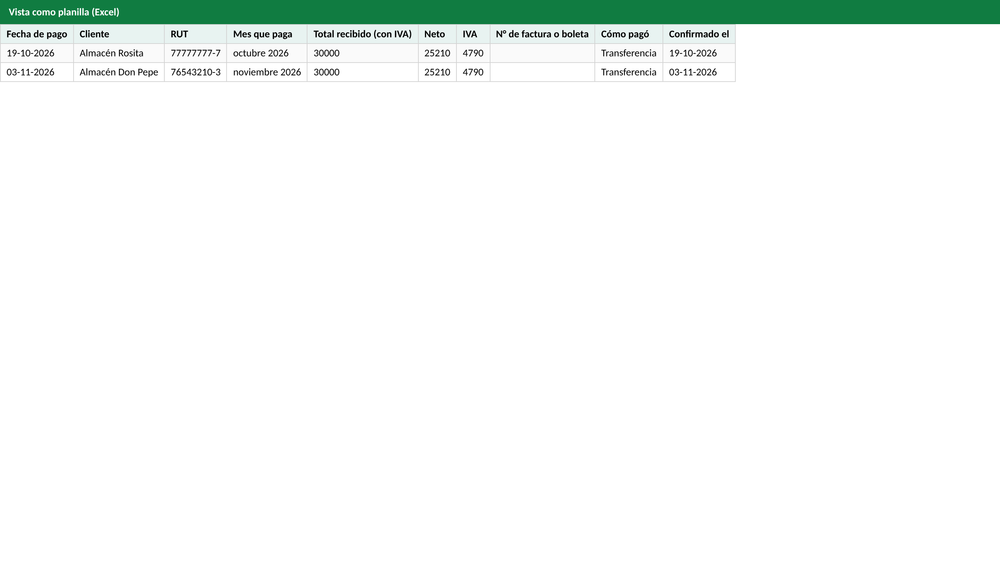